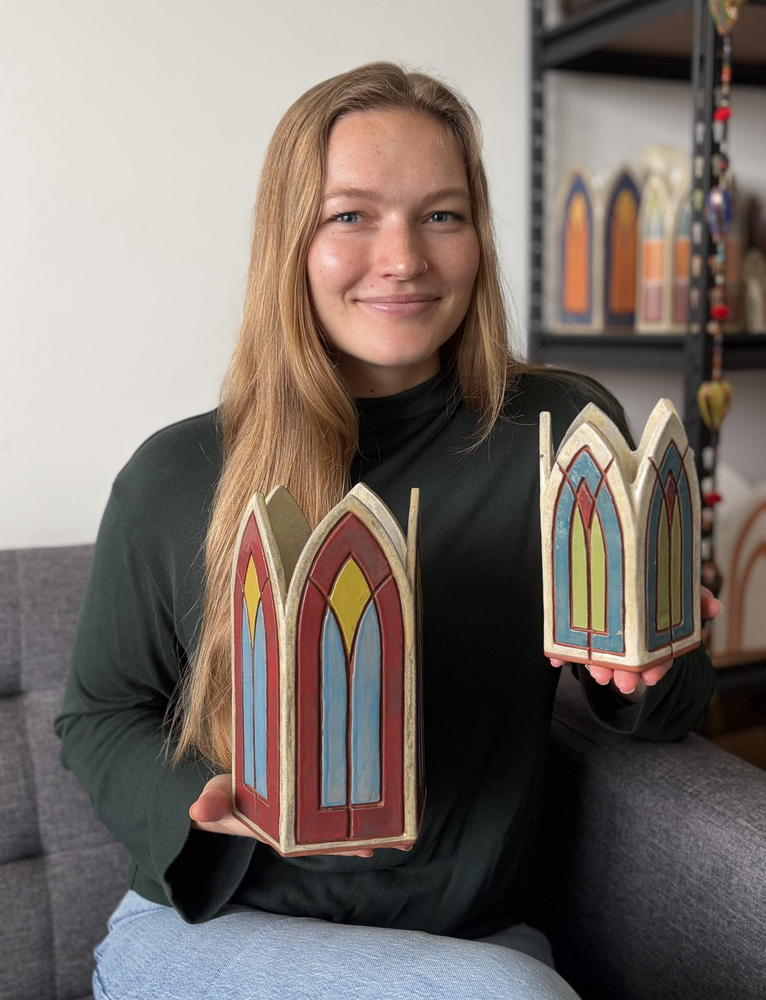

A window into me.
Creating has been a part of my life for as long as I can remember, but it wasn't until I joined a community makerspace that I began to seriously develop my artistic practice. I'm continually inspired by the generosity, curiosity, and creativity of fellow makers, and I love witnessing what unfolds when people have the space to explore new ideas.
As my ceramics practice evolved toward slab construction and architectural forms, I found myself increasingly drawn to the grandeur of Gothic architecture and the luminous quality of stained glass windows. My work aims to capture the weathered stone, rich texture, and colored light found in historic Gothic cathedrals and universities. Achieving those qualities in clay required countless rounds of experimentation, kiln firings, and the generosity of other artists willing to share their knowledge.
That curiosity eventually led me to study stained glass as a medium in its own right. Working with glass has deepened my appreciation for Gothic architecture while shaping my ceramics practice, allowing each medium to inform and strengthen the other.
Lane Dye Studio is where I explore the intersection of ceramics, stained glass, and architectural form. Every piece is designed and handmade by me in Nashville, Tennessee.
No two pieces are exactly alike, and I hope my work brings light to everyday spaces while inspiring others to explore their own creativity.